00이 장의 목표
Basys3의 FT2232HQ USB-UART Bridge와 AXI UART Lite를 연결하고, PC에서 입력한 문자를 MicroBlaze V가 RX FIFO에서 읽은 뒤 TX FIFO로 다시 전송한다. Memory Map, AXI4-Lite, FIFO, UART 직렬 통신이 하나의 실습으로 연결된다.
- AXI UART Lite
- 115200 8N1
- RX/TX FIFO
- Polling
- B18 / A18
- Echo
01AXI UART Lite 실습 목표
Ubuntu 터미널에서 보낸 문자를 Basys3가 받아서 그대로 다시 PC로 돌려보냅니다. UART(유아트, 범용 비동기 송수신)는 두 장치가 문자 데이터를 송수신하는 통신 방식입니다.
| PC에서 보낸 문자 | Basys3에서 돌려받는 문자 |
|---|---|
A | A |
abc | abc |
123 | 123 |
07장에서는 06장의 GPIO 회로를 유지하고 AXI UART Lite를 추가하여 115200 bps·8N1 문자 Echo를 확인합니다. AXI 구조는 05장, GPIO 제어는 06장을 참고합니다.
07장 보조 학습: 07.1장 — 성공한 UART Echo C 코드 쉽게 이해하기 · 헤더·주소·포인터·FIFO·Polling을 한 줄씩 설명합니다.
02실습으로 연결한 UART 통신 흐름 · 8N1
UART 8N1은 Start 1비트(0) → Data 8비트 → Parity 없음 → Stop 1비트(1) 형식입니다. Idle 상태의 RX/TX는 High(1)입니다. 115200 bit/s가 IP와 PC에서 일치해야 합니다.
03AXI UART Lite 내부 구조
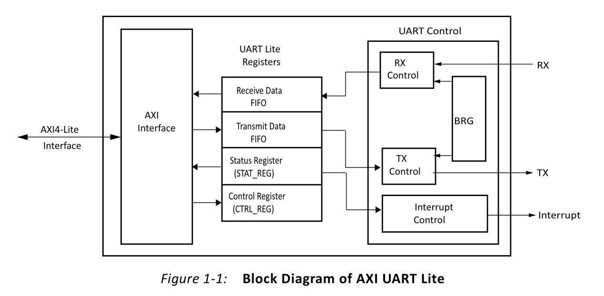
AXI Interface, RX/TX FIFO, Status/Control Register와 UART 제어 구조.
AMD PG142 · 공식 문서 ↗
AXI4-Lite 레지스터 접근과 직렬 RX/TX 신호 사이에서 각각 16문자 깊이의 RX/TX FIFO(피포, 먼저 들어온 데이터를 먼저 꺼내는 버퍼)가 동작합니다.
04UART Register Map
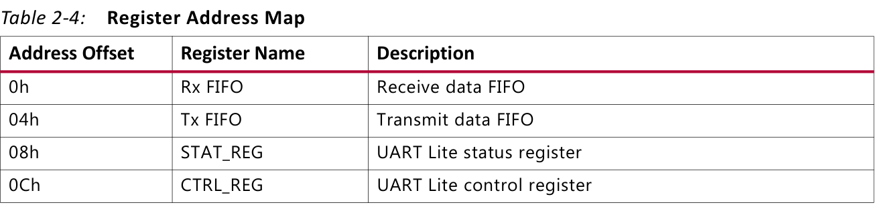
RX +0x00, TX +0x04, STAT +0x08, CTRL +0x0C.
AMD PG142 · 공식 문서 ↗
| Offset | Register | Access | 역할 |
|---|---|---|---|
+0x00 | RX FIFO | Read | 수신 Byte 읽기 |
+0x04 | TX FIFO | Write | 송신 Byte 쓰기 |
+0x08 | STAT_REG | Read | FIFO·Error 상태 |
+0x0C | CTRL_REG | Write | FIFO Reset·Interrupt Enable |
05RX FIFO
상세 설명 및 공식 도표 펼치기
RX FIFO는 16-entry이며 수신된 Character를 저장한다. 8-bit 설정에서는 유효 Data가 bit [7:0]에 들어온다.
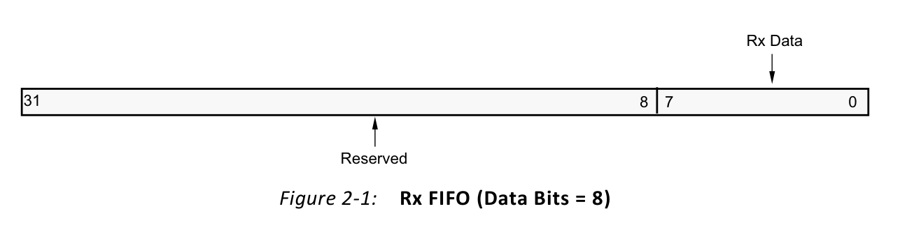
데이터 비트 수 8일 때 유효 수신 데이터는 bit[7:0].
AMD PG142 · 공식 문서 ↗
06TX FIFO
상세 설명 및 공식 도표 펼치기
TX FIFO도 16-entry이며 CPU가 전송할 Byte를 쓴다.
XUartLite_SendByte()는 FIFO가 쓸 수 있을 때까지 확인한 뒤 1 Byte를 전송한다.
송신 데이터는 하위 8비트에 기록된다.
AMD PG142 · 공식 문서 ↗
07Status Register
상세 설명 및 공식 도표 펼치기
| Bit | 이름 | 의미 |
|---|---|---|
| 7 | Parity Error | Parity 오류 |
| 6 | Frame Error | Stop Bit 오류 |
| 5 | Overrun Error | RX FIFO Full 상태에서 새 Character 수신 |
| 4 | Interrupt Enabled | Interrupt Enable 상태 |
| 3 | TX FIFO Full | 송신 FIFO 가득 참 |
| 2 | TX FIFO Empty | 송신 FIFO 비어 있음 |
| 1 | RX FIFO Full | 수신 FIFO 가득 참 |
| 0 | RX FIFO Valid Data | 수신할 Data가 존재 |

RX FIFO 유효 bit0, TX FIFO Full bit3 등 비트 위치.
AMD PG142 · 공식 문서 ↗
08Control Register
상세 설명 및 공식 도표 펼치기
| Bit | 기능 |
|---|---|
| 4 | Interrupt Enable |
| 1 | RX FIFO Reset/Clear |
| 0 | TX FIFO Reset/Clear |
이번 코드에서는 시작할 때 0x03을 써서 RX/TX FIFO를 비우고 bit4는 0으로 유지하여 Interrupt를 사용하지 않는다.

TX FIFO Clear bit0, RX FIFO Clear bit1, Interrupt Enable bit4.
AMD PG142 · 공식 문서 ↗
09Polling · C Driver · AXI 트랜잭션
상세 설명 및 공식 도표 펼치기
Polling(폴링, CPU가 상태를 반복적으로 확인하는 방식)은 인터럽트 없이 UART 상태를 읽고 데이터가 준비됐을 때 FIFO를 접근합니다.
| C 함수 | AXI 동작 |
|---|---|
XUartLite_RecvByte(Base) | RX FIFO Valid Data 대기 → Base+0x00 Read |
XUartLite_SendByte(Base, ch) | TX FIFO Full 여부 확인 → Base+0x04 Write |
XUartLite_WriteReg(..., 0x03) | Base+0x0C Write → 두 FIFO 초기화 |
05장의 AXI4-Lite Read/Write가 07장에서 실제 UART 데이터 이동에 사용됩니다.
1006장 성공 프로젝트 → 07장 복제
07장은 06장 성공 프로젝트를 복제하여 이어서 진행합니다. 처음부터 SoC를 새로 만들지 않으며 06장 프로젝트은 수정하지 않습니다.
| 대상 | 06장 · 유지 | 07장 작업 파일 |
|---|---|---|
| Vivado Project | ~/soc/hw/soc06_axi_gpio/soc06_axi_gpio.xpr | ~/soc/hw/soc07_axi_uartlite/soc07_axi_uartlite.xpr |
| Block Design | soc06_axi_gpio.bd | soc07_axi_uartlite.bd |
| HDL Wrapper | soc06_axi_gpio_wrapper | soc07_axi_uartlite_wrapper · UART 포트 작성 후 생성 |
| Constraints | 06장 Clock·Reset·GPIO XDC | 07장에 독립 복사한 XDC + UART RX/TX |
| Vitis Workspace | ~/soc/sw 사용 · 07장 Platform·Application만 새로 생성 | |
06장 성공 프로젝트 열기
Vivado 2024.2의 File → Open Project에서
soc06_axi_gpio.xpr을 엽니다.microblaze_riscv_0, Local BRAM,axi_gpio_0,axi_smc를 확인합니다.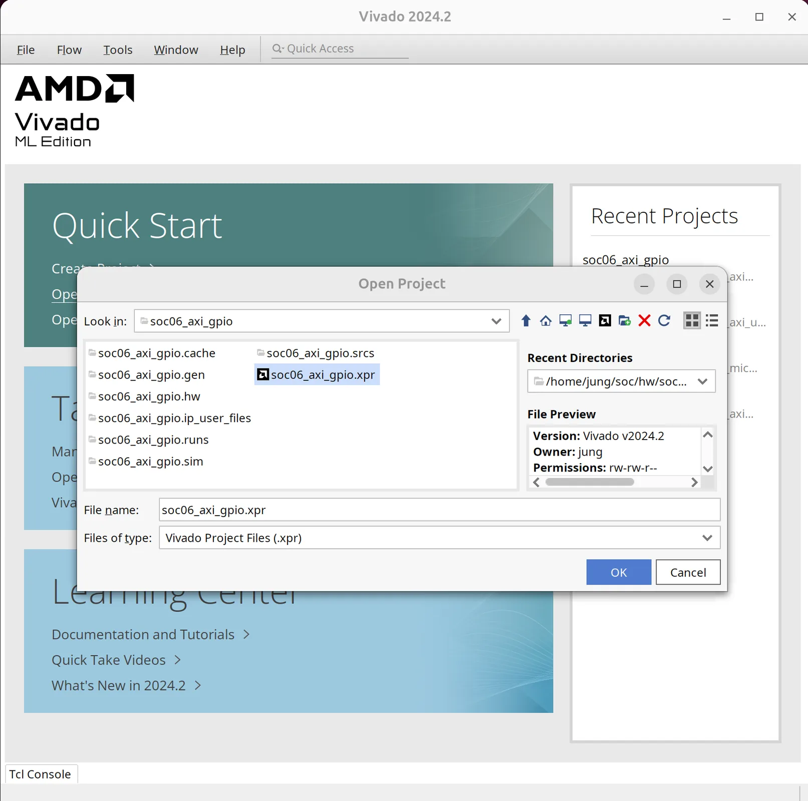
그림 01 · 06장 성공 Vivado 프로젝트 열기 — GUI 조작 화면. 클릭하면 큰 화면으로 열립니다. 07장 프로젝트 복제
File → Project → Save As를 실행하여 새 이름
soc07_axi_uartlite, 최종 경로~/soc/hw/soc07_axi_uartlite/soc07_axi_uartlite.xpr로 저장합니다. 폴더가 중첩 생성되지 않도록 최종 경로를 확인합니다.
그림 02 · Save Project As — 07장 프로젝트 분리 — GUI 조작 화면. 클릭하면 큰 화면으로 열립니다. Block Design을 07장으로 저장
복제본의
soc06_axi_gpio.bd를 열고 File → Save Block Design As → 새 이름soc07_axi_uartlite→ Local to Project·Add to Design Sources를 선택합니다.
그림 03 · Save Block Design As — 07장 BD 분리 — GUI 조작 화면. 클릭하면 큰 화면으로 열립니다. Design Sources와 XDC 경로 확인
Sources → Design Sources에 새
soc07_axi_uartlite.bd가 생성됐는지 확인합니다. BD·XDC의 실제 경로가 06장 폴더를 가리키면 07장 프로젝트로 Copy File Into Project 등의 기능으로 독립 복사합니다. 불필요한 기존 BD는 Remove File from Project로만 정리합니다. Delete files from disk는 선택하지 않습니다.
화면 확인 현재 프로젝트는 soc07_axi_uartlite이며 편집할 Block Design은 soc07_axi_uartlite.bd입니다. Wrapper는 아직 만들지 않습니다.
11AXI UART Lite IP 추가
07장 Block Design 열기
Sources → Design Sources에서
soc07_axi_uartlite.bd를 더블클릭합니다.Add IP
Block Design 빈 곳에서 우클릭 → Add IP →
AXI Uartlite를 검색하여 추가합니다.기존 IP와 비교
새
axi_uartlite_0와 기존axi_gpio_0가 함께 있는지 확인합니다. MicroBlaze V·BRAM·Clock·Reset·SmartConnect를 삭제하지 않습니다.
화면 확인 07장 BD에 기존 axi_gpio_0와 신규 axi_uartlite_0가 표시됩니다.
12AXI UART Lite 통신 설정 · 115200 8N1
Customize IP 열기
axi_uartlite_0를 더블클릭합니다.통신값 입력
Baud Rate 115200, Data Bits 8, Parity None을 지정합니다. UART Lite의 Stop Bit는 1입니다. AXI CLK Frequency는 실제 연결된 시스템 클록을 기준으로 06장 설정
100 MHz와 일치하는지 확인합니다.
그림 04 · AXI UART Lite 100 MHz · 115200 · 8N1 설정 — GUI 조작 화면. 클릭하면 큰 화면으로 열립니다. OK 선택
설정값을 확인하고 OK를 클릭합니다. PC 터미널도 동일한 115200 8N1을 사용합니다.
| 항목 | 값 |
|---|---|
| AXI CLK Frequency | 기존 AXI 연결 클록 확인 · 06장 기준 100 MHz |
| Baud Rate | 115200 |
| Data Bits | 8 |
| Parity | None |
| Stop Bits | 1 (고정) |

문서에는 Baud 9600으로 표시된다. 실제 07장 설정은 Vivado 2024.2에서 115200, 8N1로 선택한다.
AMD PG142 · 공식 문서 ↗
화면 확인 IP 설정이 115200, 8비트, Parity 없음으로 표시됩니다.
13AXI · Clock · Reset 연결
- Run Connection Automation 실행
Diagram에서
기대 화면: 기존axi_uartlite_0/S_AXI를 확인합니다. 상단 Run Connection Automation에서 UART의S_AXI만 선택하고, 기존 CPUM_AXI_DP의 AXI 경로를 사용합니다.axi_smc에서axi_uartlite_0/S_AXI로 AXI 선이 연결됩니다.
그림 05 · Run Connection Automation — S_AXI만 선택 — GUI 조작 화면. 클릭하면 큰 화면으로 열립니다. - 기존 AXI GPIO 유지 확인
주의: 06장 GPIO 연결을 해제하거나 SmartConnect를 중복 생성하지 않습니다.microblaze_riscv_0/M_AXI_DP → axi_smc를 따라가며 06장axi_gpio_0/S_AXI가 남아 있는지, UART가 별도 출력으로 분기하는지 확인합니다. 실제 화면에서 확인된M01_AXI처럼 출력 번호는 Vivado Diagram 값에 따릅니다.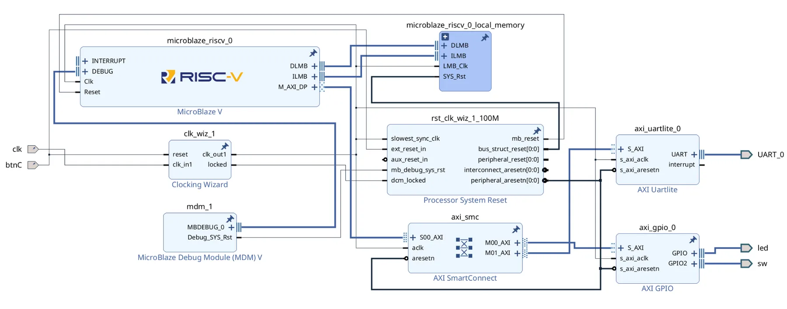
그림 06 · AXI SmartConnect의 두 출력과 UART 연결 확인 — GUI 조작 화면. 클릭하면 큰 화면으로 열립니다. - Clock·Reset 연결 확인
UART의
기대 화면: AXI, 클록, 리셋 신호가 모두 연결되어 있습니다.s_axi_aclk가 기존 100 MHz AXI Clock,s_axi_aresetn이 기존 Active-Low 주변장치 Reset과 연결되는지 확인합니다.
├─ axi_gpio_0/S_AXI (06장 유지)
└─ axi_uartlite_0/S_AXI (07장 추가)
14UART RX/TX 외부 포트 생성
- 현재
UART_0외부 인터페이스 확인앞선 07장 GUI에서
기대 화면: UART 외부 인터페이스 하나에 수신 RX와 송신 TX가 포함됩니다.UART_0를 이미 만들었다면 그대로 사용합니다. 별도의RsRx/RsTx포트를 중복 생성하지 않습니다.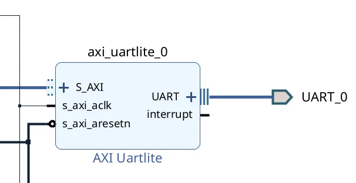
그림 07 · UART_0 외부 인터페이스 생성 — GUI 조작 화면. 클릭하면 큰 화면으로 열립니다. - 신호 방향 확인
Diagram에서 UART 인터페이스를 펼쳐
rx가 FPGA Input,tx가 FPGA Output인지 확인합니다. 개별 핀 방식이라면rx/tx를 각각 Make External로 만든 후 하나씩 방향을 확인합니다. - 저장·Wrapper 포트명 확인
Ctrl+S로 BD를 저장한 뒤 Wrapper 생성 절에서 새 Wrapper를 생성하고, 최상위 모듈 선언의 실제 RX/TX 포트명을 적습니다.
주의:UART_0인터페이스명과 최상위 Verilog 포트명은 다를 수 있습니다. Wrapper 확인 전에는 XDC에 이름을 단정하지 않습니다.
Basys3 USB-UART 핀: FPGA RX는 B18, FPGA TX는 A18입니다. 참고: Digilent Basys-3 Master XDC.
15Design Sources · Wrapper 생성 · Top 지정
Wrapper(래퍼, Block Design을 최상위 FPGA 포트와 연결하는 HDL)는 UART IP와 외부 포트를 모두 만든 뒤 생성합니다.
새 Block Design 선택
Sources → Design Sources에서
soc07_axi_uartlite.bd를 선택합니다.Create HDL Wrapper
우클릭 → Create HDL Wrapper → Let Vivado manage wrapper and auto-update를 선택합니다.

그림 08 · Let Vivado manage wrapper and auto-update 선택 — GUI 조작 화면. 클릭하면 큰 화면으로 열립니다. Set as Top
생성된
soc07_axi_uartlite_wrapper를 우클릭 → Set as Top으로 지정합니다. Wrapper에 UART RX/TX와 06장 GPIO 포트가 모두 보이는지 확인합니다.
그림 09 · 자동 생성 모듈의 실제 UART_0_rxd · UART_0_txd 확인 — GUI 조작 화면. 클릭하면 큰 화면으로 열립니다. 구 Wrapper 정리
07장 복제본에 남은
soc06_axi_gpio_wrapper는 새 Wrapper 확인 후 필요 시 Remove File from Project로만 제거합니다. Delete files from disk는 선택하지 않습니다.
화면 확인 Top Module이 soc07_axi_uartlite_wrapper이며 BD·Wrapper·XDC가 06장 프로젝트을 직접 수정하지 않는 독립 경로입니다.
16Basys3 UART 핀 XDC 추가
- 07장 XDC 열기
Sources → Constraints에서 07장에 독립 복사된 XDC를 엽니다. Clock·Reset·GPIO 핀 제약은 유지합니다.
- Wrapper 포트 이름 확인
Wrapper 생성 절에서 생성한 최상위
soc07_axi_uartlite_wrapper의 RX/TX 이름이UART_0_rxd/UART_0_txd인지 확인합니다. 이 프로젝트는UART_0인터페이스를 외부화했습니다. - UART 핀 두 줄 추가
이번 07장 자동 생성 모듈과 Wrapper의 실제 UART 포트명은
기대 화면: RX와 TX 핀이 한 개씩 지정되고, 기존 GPIO/Clock/Reset XDC는 변경되지 않습니다.UART_0_rxd와UART_0_txd입니다. 아래 두 줄을 그대로 입력합니다.
그림 10 · 정정된 UART 포트명과 B18/A18 핀 제약. 클릭하면 큰 화면으로 열립니다.
## UART RX: PC → FPGA · B18
set_property -dict { PACKAGE_PIN B18 IOSTANDARD LVCMOS33 } [get_ports UART_0_rxd]
## UART TX: FPGA → PC · A18
set_property -dict { PACKAGE_PIN A18 IOSTANDARD LVCMOS33 } [get_ports UART_0_txd]확인 : 위 두 포트로 XDC를 수정한 후 07장 Bitstream Generation이 성공했고, Setup WNS +0.817 ns 및 타이밍 위반 0건이 확인됩니다.
17Address Editor · UART 주소 할당
Address Editor 열기
Vivado Block Design 상단의 Address Editor 탭을 선택합니다.
UART 주소 배치
axi_uartlite_0/S_AXI가 Unassigned 상태이면 Assign All 또는 해당 세그먼트의 주소 할당 기능을 실행합니다.주소 기록
UART Lite에 표시되는 실제 Base Address와 High Address를 확인합니다. 기존 BRAM·GPIO 범위와 겹치지 않는지 확인합니다. 아래 값은 실제 07장 Address Editor와 Vitis
xparameters.h에서 확인된 값입니다.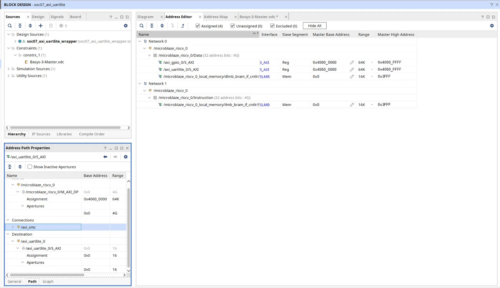
그림 11 · 주소 할당 — GPIO 0x40000000 / UART 0x40600000. 클릭하면 큰 화면으로 열립니다.
| 구분 | 확인할 범위 |
|---|---|
| Local BRAM | 0x00000000 ~ 0x00003FFF · 16 KiB 유지 |
| AXI GPIO | 0x40000000 ~ 0x4000FFFF · 64 KiB |
| AXI UART Lite | 0x40600000 ~ 0x4060FFFF · 64 KiB |
화면 확인 UART가 주소 공간에 배치되며 GPIO·BRAM과 충돌하지 않습니다.
확인 : AXI GPIO 0x40000000, AXI UART Lite 0x40600000, Local BRAM 16 KiB가 07장 실제 Address Editor에서 확인됩니다. 보조 예제의 다른 주소를 적용하지 않습니다.
18Validate Design → Bitstream → XSA
설계 확인
Block Design을 저장하고 Validate Design을 실행합니다. AXI·Clock·Reset 오류가 없는지 확인합니다.
Output Products 준비
필요하면
soc07_axi_uartlite.bd에서 Generate Output Products를 실행하고 새 Wrapper가 Top인지 확인합니다.Generate Bitstream
Flow Navigator → Generate Bitstream을 실행합니다. 합성·구현·비트스트림 완료 메시지와 오류 여부를 확인합니다.

그림 12 · Generate Bitstream 실행 설정 — GUI 조작 화면. 클릭하면 큰 화면으로 열립니다. 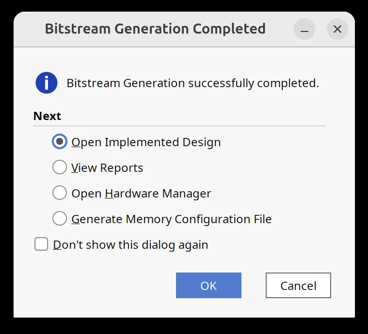
그림 13 · Bitstream Generation successfully completed — 실행 화면. 클릭하면 큰 화면으로 열립니다. 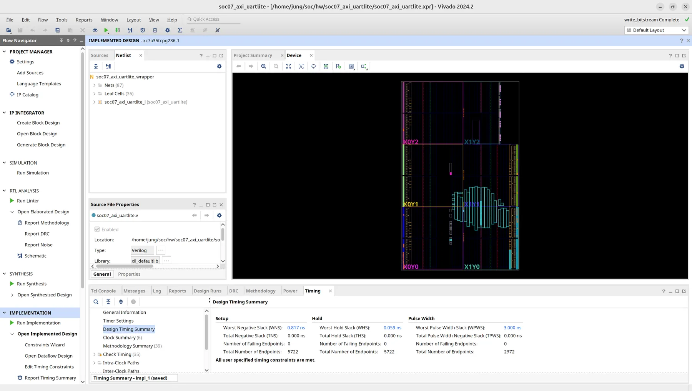
그림 14 · 실제 타이밍 성공 WNS +0.817 ns — 실행 화면. 클릭하면 큰 화면으로 열립니다. 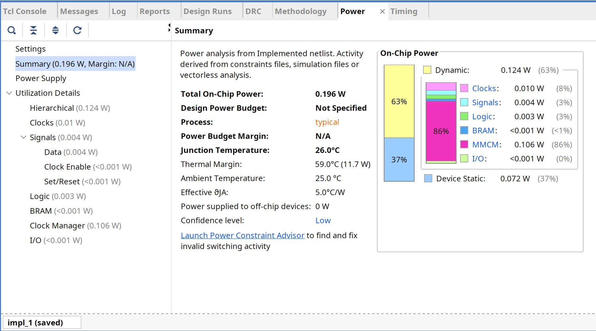
그림 15 · Vivado 추정 소비전력 0.196 W (Low Confidence) — 전력 추정 화면. 클릭하면 큰 화면으로 열립니다. Export Hardware
File → Export → Export Hardware에서 Include bitstream을 선택하여 07장 하드웨어 파일
soc07_axi_uartlite.xsa를 내보냅니다. 파일이 실제 생성됐는지 확인합니다.
그림 16 · Export Hardware — Include bitstream — GUI 조작 화면. 클릭하면 큰 화면으로 열립니다. 
그림 17 · 07장 XSA 파일명과 저장 위치 확인 — GUI 조작 화면. 클릭하면 큰 화면으로 열립니다. 
그림 18 · XSA 내보내기 Finish 확인 — GUI 조작 화면. 클릭하면 큰 화면으로 열립니다.
화면 확인 07장 Bitstream 생성이 완료되고 새 soc07_axi_uartlite.xsa가 저장됩니다.
19Vitis · 07장 Platform 생성
Vitis Unified IDE(비티스 통합 개발환경) 2024.2에서 06장 성공 Platform은 유지하고 07장 XSA 기반의 새 Platform을 만듭니다.
Workspace 열기
Vitis에서 기존 Workspace
~/soc/sw를 엽니다.New Platform
메뉴 File → New Component → Platform을 선택합니다. 새 Platform 이름은
soc07_axi_uartlite_platform을 권장합니다.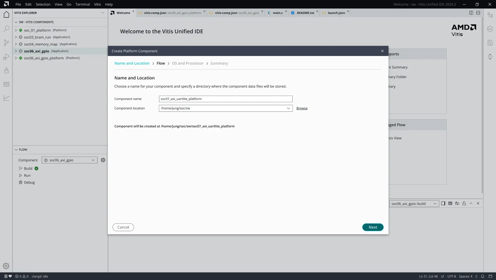
그림 19 · Vitis Platform soc07_axi_uartlite_platform 생성 — GUI 조작 화면. 클릭하면 큰 화면으로 열립니다. 07장 XSA 지정
Browse에서 Bitstream 생성 절에서 생성한
soc07_axi_uartlite.xsa를 선택합니다. 06장 XSA를 선택하지 않습니다.
그림 20 · 생성된 soc07_axi_uartlite.xsa 파일 선택. 클릭하면 큰 화면으로 열립니다. 
그림 21 · Vitis Hardware Design(XSA) 경로 확인 — GUI 조작 화면. 클릭하면 큰 화면으로 열립니다. Processor·Domain·Build
CPU
microblaze_riscv_0를 대상으로 standalone Domain을 선택·생성한 뒤 Finish와 Build를 진행합니다.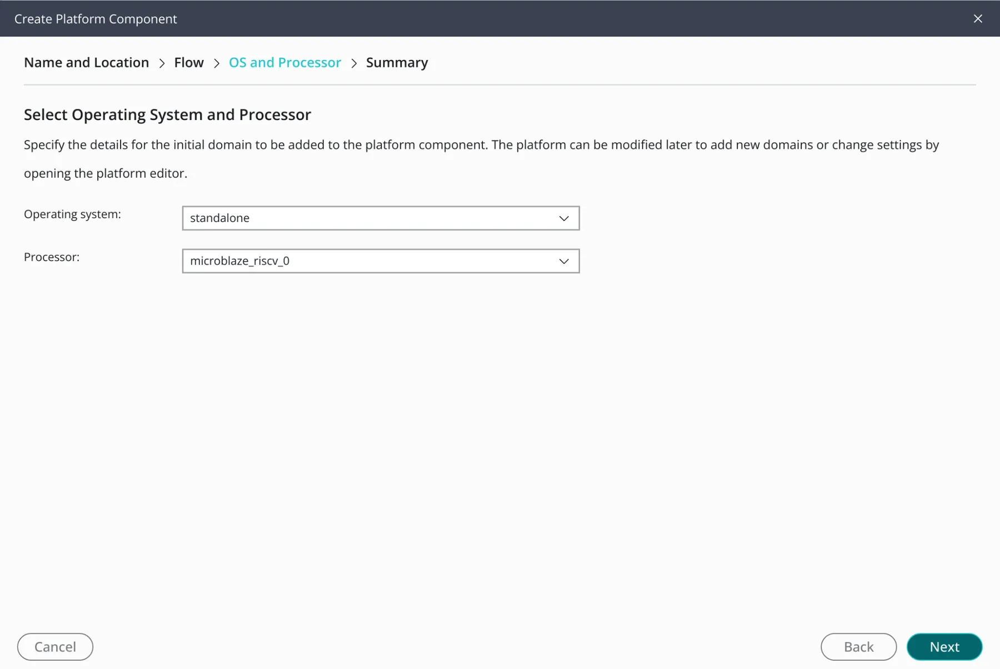
그림 22 · standalone 및 microblaze_riscv_0 선택 — GUI 조작 화면. 클릭하면 큰 화면으로 열립니다. 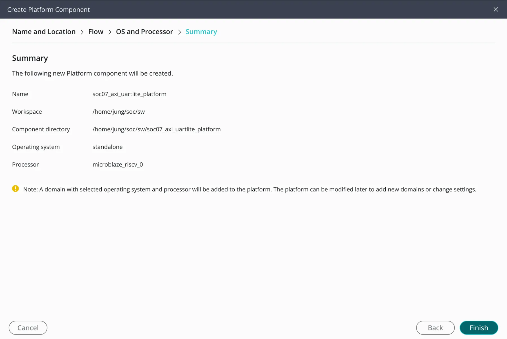
그림 23 · Vitis Platform 생성 요약 — GUI 조작 화면. 클릭하면 큰 화면으로 열립니다.
화면 확인 07장 Platform이 06장 Platform과 별도로 생성되고 07장 XSA·MicroBlaze V CPU를 참조합니다.
20Vitis · Echo Application 생성
New Application
File → New Component → Application을 실행하고 이름을
soc07_axi_uartlite로 지정합니다.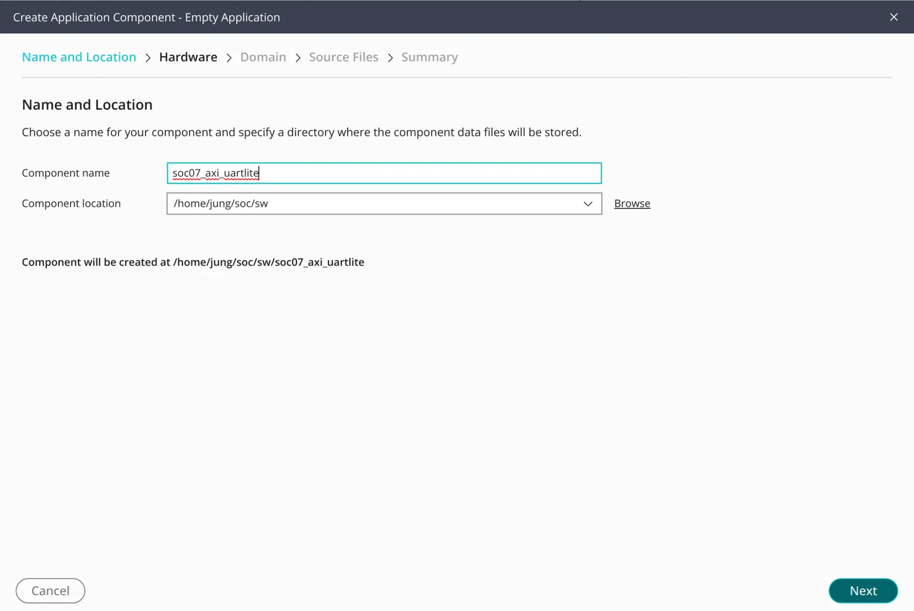
그림 24 · Echo Application 이름 soc07_axi_uartlite — GUI 조작 화면. 클릭하면 큰 화면으로 열립니다. 07장 Platform 연결
Platform을
soc07_axi_uartlite_platform, Domain을 07장 standalone의microblaze_riscv_0로 선택합니다.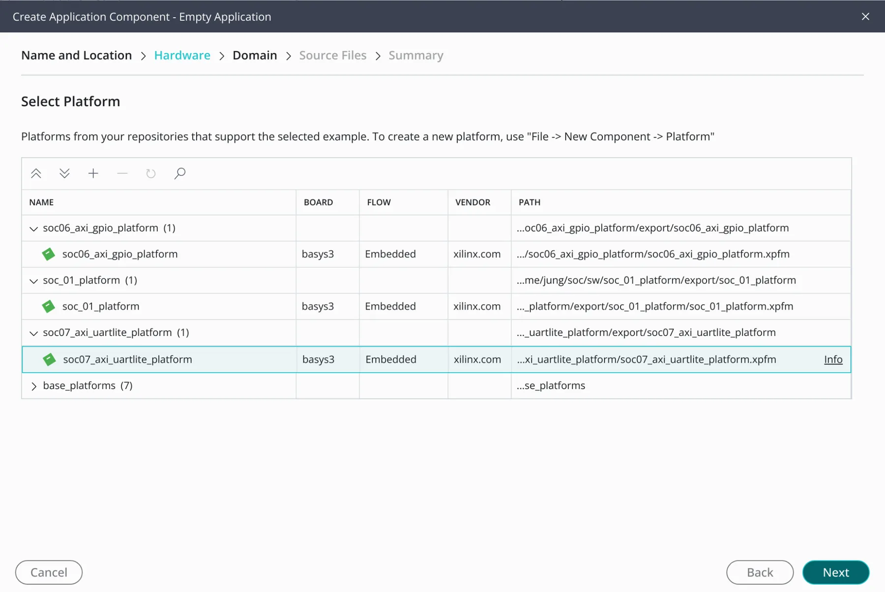
그림 25 · 07장 전용 Platform 선택 — GUI 조작 화면. 클릭하면 큰 화면으로 열립니다. 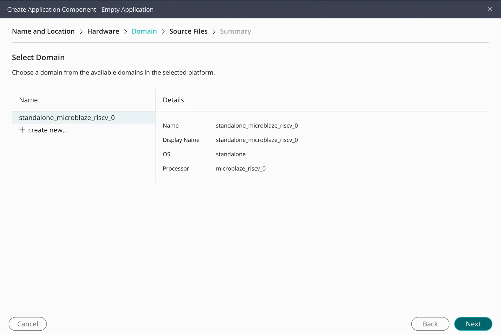
그림 26 · standalone_microblaze_riscv_0 Domain 선택 — GUI 조작 화면. 클릭하면 큰 화면으로 열립니다. main.c 추가
Application의
src에 Echo C 프로그램 절의main.c를 추가합니다. 기본 예제에 다른main()이 있다면 중복 컴파일되지 않게 정리합니다.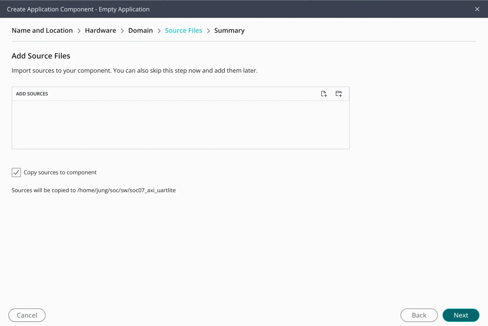
그림 27 · Application 생성 시 Source Files 단계 — GUI 조작 화면. 클릭하면 큰 화면으로 열립니다. 
그림 28 · Application 생성 요약 — GUI 조작 화면. 클릭하면 큰 화면으로 열립니다. Base Address 심볼 확인
새 Platform의
xparameters.h에 생성된 UART Lite Base Address Macro를 확인합니다. 코드의 매크로와 이름이 다르면 실제 생성된 심볼에 맞춥니다.
화면 확인 07장 Application과 Platform이 연결되고 main.c를 빌드할 준비가 됩니다.
21main.c · UART 문자 Echo 코드
Vitis 07장 Application의 src/main.c에 다음 전체 코드를 입력합니다. C 코드 보기.
#include "xparameters.h"
#include "xuartlite_l.h"
#include "xil_types.h"
/*
* SoC 07 - AXI UART Lite Polling Echo
*
* Hardware setting:
* Baud Rate : 115200
* Data Bits : 8
* Parity : None
* Stop Bit : 1
*
* PC terminal:
* 115200 8N1
* Flow control : None
* Local echo : Off
*/
#ifndef SDT
#define UARTLITE_BASEADDR XPAR_UARTLITE_0_BASEADDR
#else
#define UARTLITE_BASEADDR XPAR_XUARTLITE_0_BASEADDR
#endif
volatile u8 last_rx = 0U;
volatile u32 rx_count = 0U;
volatile u32 tx_count = 0U;
static void uart_puts(const char *text)
{
while (*text != '\0') {
XUartLite_SendByte(UARTLITE_BASEADDR, (u8)*text);
tx_count++;
text++;
}
}
int main(void)
{
/*
* CTRL_REG bit1 = RX FIFO reset
* CTRL_REG bit0 = TX FIFO reset
* 0x03 : 두 FIFO를 모두 비운다.
* Interrupt bit4는 0이므로 Polling 방식이다.
*/
XUartLite_WriteReg(
UARTLITE_BASEADDR,
XUL_CONTROL_REG_OFFSET,
0x03U
);
uart_puts("\r\nAXI UART Lite Echo Ready\r\n");
uart_puts("Type characters. Received data will be echoed.\r\n> ");
while (1) {
/* RX FIFO에 문자가 들어올 때까지 Blocking 대기 */
last_rx = XUartLite_RecvByte(UARTLITE_BASEADDR);
rx_count++;
/* 받은 1 Byte를 그대로 PC로 다시 전송 */
XUartLite_SendByte(UARTLITE_BASEADDR, last_rx);
tx_count++;
}
return 0;
}
| 코드 | 동작 |
|---|---|
XUartLite_WriteReg(..., 0x03) | 시작할 때 RX·TX FIFO 비우기 |
uart_puts() | PC에 시작 안내 문자열 전송 |
XUartLite_RecvByte() | 문자 1바이트가 들어올 때까지 대기 |
XUartLite_SendByte() | 받은 1바이트를 그대로 송신 |
화면 확인 실제 xparameters.h의 UART 주소 Macro와 코드가 일치하고 main() 함수는 한 개만 있습니다.
22Vitis Build · FPGA Program · Debug
Build
07장 Platform Build를 마친 뒤 07장 Application Build를 실행합니다. 오류 없이
soc07_axi_uartlite.elf를 생성했는지 확인합니다.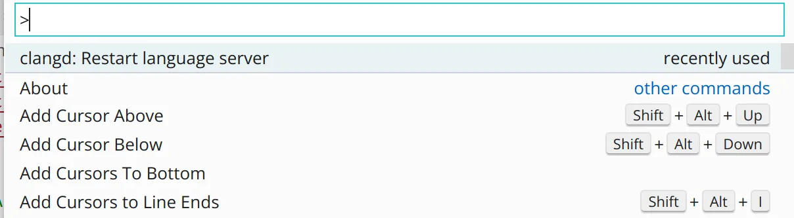
그림 29 · 재부팅 없이 clangd Language Server 재시작 메뉴 — GUI 조작 화면. 클릭하면 큰 화면으로 열립니다. 
그림 30 · 실제 BSP xparameters.h에 UART 주소 매크로 생성. 클릭하면 큰 화면으로 열립니다. FPGA Program
Basys3의 J4 USB 연결을 확인하고 07장 Bitstream으로 Program Device를 실행합니다.
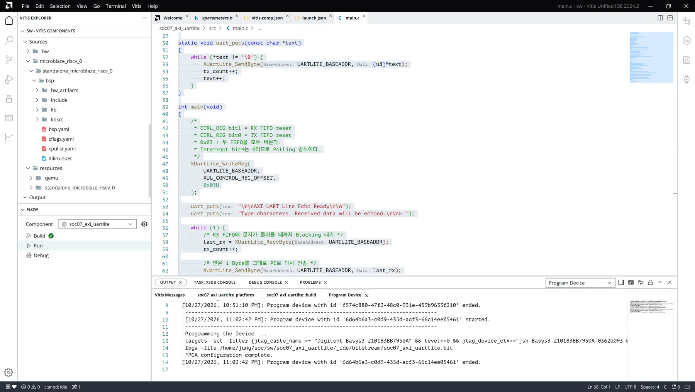
그림 31 · FPGA configuration complete 로그 — 실행 화면. 클릭하면 큰 화면으로 열립니다. launch.json설정 화면 열기Vitis 화면 중앙 상단의
launch.json탭을 먼저 클릭합니다. Launch Configsoc07_axi_uartlite_app_hw_1, Target Setup ModeBaremetal Debug, Processormicroblaze_riscv_0, 07장 Bitstream과soc07_axi_uartlite.elf를 확인합니다.launch.json은 실행 파일이 아니라 다운로드·디버그 설정 파일입니다.
그림 32 · launch.json에서 Bitstream·ELF·CPU 실행 설정 확인. 클릭하면 큰 화면으로 열립니다. Debug → Continue
moserial을 연결한 상태에서 왼쪽 아래 FLOW → Debug를 실행합니다. CPU가
PAUSED ON STEP으로 멈춰 있으면 Continue(F5)를 클릭합니다. 화면에서uart_puts()가 시작 안내문을 출력하고 수신 대기 루프로 진행합니다.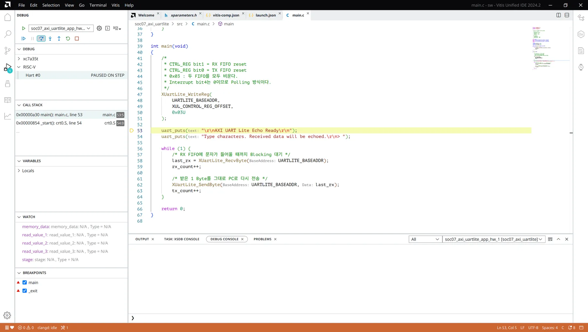
그림 33 · MicroBlaze V Hart #0 Debug 진입 — 53행 일시정지. 클릭하면 큰 화면으로 열립니다.
launch.json 탭 열기 → Debug 실행 → PAUSED ON STEP → Continue(F5) → moserial에 안내문 출력 → 문자 Echo 확인. 탭을 먼저 열었을 때 정상 진입한 것은 실습에서 관찰한 절차이며, 오류의 근본 원인이 launch.json 탭에 있다는 뜻은 아닙니다.화면 확인 07장 ELF 빌드와 FPGA Program이 실제 성공했는지 확인합니다.
23Ubuntu · moserial 포트 연결
moserial(모시리얼, 그래픽 시리얼 통신 프로그램)에서 실제 Basys3 USB-UART 장치를 연결합니다.
USB 장치 식별
Basys3 연결 상태에서
ls -l /dev/serial/by-id/로 USB 장치의 고유 이름과 실제/dev/ttyUSB*경로를 확인합니다.moserial 실행
설치되어 있지 않다면
sudo apt install moserial로 설치하고,moserial명령으로 실행합니다.Port Setup
실제 USB-UART Device를 선택하고 115200 / Data Bits 8 / Parity None / Stop Bits 1 / Handshake None으로 맞춥니다.
Connect
Echo received data Off로 설정한 다음 Connect를 선택하고 Received ASCII 창을 엽니다.
# Basys3 연결 후 USB 시리얼 장치와 연결 경로 확인
ls -l /dev/serial/by-id/
# moserial 설치 (이미 설치되어 있으면 생략)
sudo apt install moserial
# moserial 그래픽 프로그램 실행
moserial| 설정 항목 | 값 |
|---|---|
| Device | 장치 확인 결과에 해당하는 실제 UART 포트, 예: /dev/ttyUSB2 |
| Baud Rate | 115200 |
| Data Bits | 8 |
| Parity | None |
| Stop Bits | 1 |
| Handshake | None (흐름 제어 없음) |
| Read / Write | 둘 다 허용 |
| Echo received data | Off (PC가 받은 바이트를 다시 FPGA로 자동 전송하지 않음) |
명령 설명: ls는 장치 경로를 확인하고, apt install은 moserial 설치, moserial은 그래픽 프로그램 실행에 사용됩니다. 포트 접근 오류가 발생할 때만 dialout 권한을 확인합니다.
화면 확인 실제 07장 실행 화면에서는 /dev/ttyUSB2 OPEN 115200,8N1 상태가 확인됩니다. 이 장치 번호는 다른 PC·다른 연결에서는 달라질 수 있습니다. RX 수신 문자를 PC에서 자동 재송신하는 옵션과 터미널 로컬 에코를 구분해 확인합니다.
24실제 실행 결과 · 문자 abc Echo 성공
moserial 연결
Basys3 USB-UART 포트를 열고 115200 / 8N1 / Flow Control None으로 설정합니다. 이번 실습에서 확인된 장치는
/dev/ttyUSB2입니다. PC가 자체 표시하는 로컬 에코는 끕니다.07장 ELF 실행
Vitis Debug 절차대로
launch.json탭을 열어 설정을 확인하고 Debug를 실행한 뒤, CPU가 멈춰 있으면 Continue(F5)를 누릅니다.시작 안내문 확인
moserial의 Received ASCII 에
AXI UART Lite Echo Ready와Type characters. Received data will be echoed.가 나타나는지 확인합니다. 재시작이 원인인지는 별도 확정하지 않습니다.abc 송신·수신 비교
PC에서
abc를 송신했고, moserial의 Received ASCII에abc가 반환되어 PC → FPGA UART RX → MicroBlaze V → FPGA UART TX → PC 경로의 양방향 통신이 확인됩니다. 이번 화면에는TX: 17,RX: 159도 표시됩니다.
그림 34 · moserial Received ASCII에 abc Echo 반환 — 실행 화면. 클릭하면 큰 화면으로 열립니다.
AXI UART Lite Echo Ready
Type characters. Received data will be echoed.
> abc25Vitis Debugger · Watch 변수 확인
Watch 열기
07장 애플리케이션 Debug 세션에서 Watch에
last_rx,rx_count,tx_count를 추가합니다.문자 A 입력
moserial에서
A를 보낸 뒤 수신 처리 중단점에서last_rx가0x41인지 확인합니다. 프로그램이 계속 실행 중이면 Debug 변수가 바로 갱신되지 않을 수 있으므로 잠시 중단하여 확인합니다.다른 문자 검사
B는0x42,1은0x31로 나타나는지 확인합니다.rx_count는 수신 바이트 수,tx_count는 시작 문자열 송신까지 포함한 전체 송신 바이트 수입니다.
화면 확인 실제로 송신한 문자와 last_rx의 ASCII 코드가 일치하는지 확인합니다.
26오류가 발생할 때 점검
오류 증상을 먼저 구분하고 해당 항목만 확인합니다. 06장 성공 회로를 새로 만들 필요는 없습니다.
| 증상 | 원인 후보 | 확인 |
|---|---|---|
| 아무 글자도 안 보임 | TX Pin·Baud·XSA 문제 | A18, 115200, 최신 Platform |
| 입력해도 Echo 없음 | RX Pin 또는 Terminal 장치 오류 | B18, moserial의 실제 /dev/ttyUSB* 포트, Connect |
| 문자가 깨짐 | Baud / Data / Parity 불일치 | moserial과 UART IP 모두 115200 8N1 |
| 같은 문자가 반복 송수신됨 | moserial Echo received data On | Echo received data Off |
| Build Macro 없음 | XSA/Platform 미갱신 또는 Instance 명칭 차이 | xparameters.h |
| 수신 첫 글자가 이상함 | 기존 FIFO Data | 시작 시 FIFO Clear 확인 |
| RX/TX가 서로 바뀜 | 방향 관점 혼동 | B18=FPGA RX, A18=FPGA TX |
추가 점검: 파일 경로 문제는 07장 BD/Wrapper/XDC가 06장 폴더를 직접 참조하는지 확인합니다. 매크로 오류는 새 XSA와 07장 Platform Build 여부를 확인합니다.
27선택 참고 · AMD 공식 Example Design
AMD PG142 Chapter 5의 공식 예제는 MicroBlaze V 없이 AXI Traffic Generator(AXI 트래픽 제너레이터, 시험용 AXI 접근 생성기)가 AXI UART Lite에 데이터를 기록하는 별도 설계이다.

AMD 공식 AXI Traffic Generator + UART Lite 예제 회로. Basys3 SoC 회로와 구별한다.
AMD PG142 · 공식 문서 ↗
공식 예제 열기
Vivado에서 AXI UART Lite IP의 Open IP Example Design 기능을 선택한다. 기존 SoC 프로젝트와 분리된 별도 예제 프로젝트로 연다.
데이터 전송 경로 읽기
ATG가 AXI4-Lite를 통해 TX FIFO에 ASCII
0x41을 쓴다. UART 송신 포트에서는 문자A가 출력된다.코드와 실제 설계 구분
예제에는
<component_name>_exdes.vhd,clock_gen.vhd,atg_*.coe가 포함된다. 이 파일들은 공식 예제 생성 시 제공되는 것이며 이 교재에서 별도로 작성한 MicroBlaze 프로그램이 아니다.
28선택 실습 · Verilog 테스트벤치
AMD PG142 Chapter 6의 확인 목적 을 Verilog로 옮겼다. 를 AXI4-Lite로 접근하여 같은 송신 문자 A를 검사하고 UART 수신·Echo 검사를 확장한 독립형 Verilog 테스트벤치다.

AMD 예제는 VHDL 예제 설계에 200 MHz 입력 클록을 공급하고 UART TX의 문자 A를 검사한다.
AMD PG142 · 공식 문서 ↗
| 구분 | 공식 | 07장 Verilog 실습 |
|---|---|---|
| 언어 | VHDL (*_exdes_tb.vhd) | Verilog (tb_soc07_axi_uartlite.v) |
| 시험 회로 | AMD 예제 설계 + AXI Traffic Generator | AXI UART Lite IP + Verilog AXI4-Lite BFM |
| 클록 | 200 MHz 입력 → 예제 내부 100 MHz AXI | 100 MHz AXI 직접 공급 |
| 확인 | UART TX 문자 A 확인 | TX A, RX B, AXI RX Read, TX Echo B |
| 범위 | 공식 IP Example Design | IP 단독 시뮬레이션 · MicroBlaze V 소프트웨어는 별도 확인 |
별도 IP 시뮬레이션 프로젝트 준비
정상 동작하는 06장 프로젝트는 유지한다. 독립 Vivado 프로젝트에서 AXI UART Lite IP를 추가하고 인스턴스 이름을
axi_uartlite_0으로 지정한다. AXI Clock 100 MHz, Baud 115200, Data Bits 8, No Parity로 설정한다.Simulation Sources 추가
Add Sources → Add or Create Simulation Sources에서
tb_soc07_axi_uartlite.v를 추가한다. Test Bench Top을tb_soc07_axi_uartlite로 지정하고, IP의 Output Products를 생성한다.Run Behavioral Simulation
Vivado에서 시뮬레이션을 실행한 다음 AXI Write/Read,
rx,tx파형과 시뮬레이션 로그를 확인한다.A송신,B수신 및 Echo가 모두 맞을 때만 아래 완료 문자열이 출력된다.
Verilog 테스트벤치 전체 코드 펼쳐 보기
`timescale 1ns / 1ps
// SoC 07: Verilog-2001 self-checking AXI UART Lite IP testbench.
// Reference: AMD PG142 Figure 5-1 (example) and Figure 6-1 (test bench).
// (변경) VHDL exdes 대신 AXI-Lite BFM으로 실제 Xilinx UART Lite IP 직접 구동.
// (추가) 공식 TX 'A'(0x41) 검사 외에 RX 'B'(0x42)와 Echo를 검증.
// DUT: independent Vivado IP Catalog "axi_uartlite_0" (100 MHz, 115200 8N1).
// Not a complete MicroBlaze V software / Basys3 hardware simulation.
module tb_soc07_axi_uartlite;
localparam integer CLOCK_NS = 10;
localparam integer BAUD = 115200;
localparam integer BIT_NS = (1000000000 + BAUD/2) / BAUD;
reg clk = 0;
always #(CLOCK_NS/2) clk = ~clk;
reg resetn = 0;
reg rx = 1;
wire tx, interrupt;
reg [3:0] awaddr = 0, araddr = 0;
reg [31:0] wdata = 0;
reg [3:0] wstrb = 4'hF;
reg awvalid = 0, wvalid = 0, bready = 0;
reg arvalid = 0, rready = 0;
wire awready, wready, bvalid, arready, rvalid;
wire [1:0] bresp, rresp;
wire [31:0] rdata;
// Generate Output Products for this IP in Vivado before simulation.
axi_uartlite_0 dut (
.s_axi_aclk(clk), .s_axi_aresetn(resetn),
.s_axi_awaddr(awaddr), .s_axi_awvalid(awvalid), .s_axi_awready(awready),
.s_axi_wdata(wdata), .s_axi_wstrb(wstrb),
.s_axi_wvalid(wvalid), .s_axi_wready(wready),
.s_axi_bresp(bresp), .s_axi_bvalid(bvalid), .s_axi_bready(bready),
.s_axi_araddr(araddr), .s_axi_arvalid(arvalid), .s_axi_arready(arready),
.s_axi_rdata(rdata), .s_axi_rresp(rresp),
.s_axi_rvalid(rvalid), .s_axi_rready(rready),
.rx(rx), .tx(tx), .interrupt(interrupt)
);
// AXI4-Lite write: AW and W VALID asserted simultaneously.
// VALID is held until each channel's READY handshake.
task axi_write;
input [3:0] address;
input [31:0] value;
reg got_aw, got_w;
begin
@(negedge clk);
awaddr=address; wdata=value;
awvalid=1; wvalid=1; bready=0;
got_aw=0; got_w=0;
while (!got_aw || !got_w) begin
@(posedge clk);
if (awvalid && awready) got_aw=1;
if (wvalid && wready) got_w=1;
@(negedge clk);
if (got_aw) awvalid=0;
if (got_w) wvalid=0;
end
wait(bvalid === 1'b1);
if (bresp !== 2'b00) begin
$display("TEST FAILED AXI WRITE address=%h bresp=%b", address,bresp);
$stop;
end
@(negedge clk); bready=1;
@(posedge clk);
@(negedge clk); bready=0;
end
endtask
task axi_read;
input [3:0] address;
output [31:0] value;
begin
@(negedge clk);
araddr=address; arvalid=1; rready=0;
begin : await_ar
forever begin
@(posedge clk);
if (arvalid && arready) disable await_ar;
end
end
@(negedge clk); arvalid=0;
wait(rvalid === 1'b1);
if (rresp !== 2'b00) begin
$display("TEST FAILED AXI READ address=%h rresp=%b",address,rresp);
$stop;
end
value=rdata;
@(negedge clk); rready=1;
@(posedge clk);
@(negedge clk); rready=0;
end
endtask
// Send a PC-originated 8N1 frame into the UART Lite RX pin.
task uart_send;
input [7:0] value;
integer k;
begin
@(negedge clk); rx=0; #(BIT_NS);
for (k=0;k<8;k=k+1) begin rx=value[k]; #(BIT_NS); end
rx=1; #(BIT_NS);
end
endtask
// Sample DUT TX at each data-bit center: LSB first, then stop bit.
task uart_expect;
input [7:0] expected;
reg [7:0] actual;
integer k;
begin
@(negedge tx);
#(BIT_NS + BIT_NS/2);
for (k=0;k<8;k=k+1) begin
actual[k]=tx; #(BIT_NS);
end
if (tx !== 1'b1 || actual !== expected) begin
$display("TEST FAILED UART expected=%h actual=%h stop=%b",
expected,actual,tx);
$stop;
end
$display("PASS UART TX = %h",actual);
end
endtask
reg [31:0] status, data;
reg rx_valid;
integer i;
initial begin
$display("SoC07 AXI UART Lite Verilog testbench start");
repeat(20) @(posedge clk);
@(negedge clk); resetn=1;
repeat(20) @(posedge clk);
// CTRL_REG (+0x0C): reset RX FIFO and TX FIFO, interrupts disabled.
axi_write(4'hC,32'h00000003);
// PG142 Figure 6-1's ASCII 'A' UART TX objective.
fork
axi_write(4'h4,32'h00000041);
uart_expect(8'h41);
join
// Extension: receive a serial 'B' and check RX FIFO through AXI.
uart_send(8'h42);
rx_valid=0;
begin : poll_rx
for (i=0;i<100;i=i+1) begin
axi_read(4'h8,status); // STATUS bit0: RX FIFO valid
if (status[0] === 1'b1) begin
rx_valid=1;
disable poll_rx;
end
end
end
if (!rx_valid) begin
$display("TEST FAILED RX FIFO timeout");
$stop;
end
axi_read(4'h0,data);
if (data[7:0] !== 8'h42) begin
$display("TEST FAILED RX FIFO data=%h",data[7:0]);
$stop;
end
$display("PASS UART RX = %h",data[7:0]);
// Software-equivalent Echo by writing received byte into TX FIFO.
fork
axi_write(4'h4,data);
uart_expect(8'h42);
join
$display("SOC07 VERILOG UARTLITE SELF-CHECK PASS");
$finish;
end
initial begin
#2000000;
$display("TEST FAILED GLOBAL TIMEOUT");
$stop;
end
endmodule2907장 완료 판정 기준
아래는 실제 Vivado/Vitis/moserial 화면에서 확인한 07장 결과입니다.
- 06장 프로젝트을 보존하며 07장 Project·BD·Wrapper·XDC를 독립적으로 구성했습니다.
- 기존 AXI GPIO를 유지하고 UART Lite의 AXI·Clock·Reset·외부 RX/TX를 연결했습니다.
- 07장 Bitstream·XSA·Vitis Platform·Application의 실제 빌드 성공을 확인합니다.
- moserial이 115200 8N1, Handshake None, Echo received data Off 상태입니다.
- 실제 Basys3를 통해 보낸
abc가 moserial의 Received ASCII에 그대로 반환되는 것을 확인합니다.
30참고 문서
| 문서 | 확인 항목 |
|---|---|
| AMD PG142 · AXI UART Lite v2.0 | Block Diagram, FIFO, Register Map, Status/Control, Baud/Data/Parity |
| AMD/Xilinx UART Lite Driver | 16-byte FIFO, Hardware 고정 Baud/Parity/Data Bits, Polling/Interrupt Driver |
| XUartLite Low-Level API | RecvByte, SendByte, Status 검사 |
| AMD embeddedsw · Low-Level Example | Classic/SDT Base Address Macro와 Polling 구조 |
| Digilent Basys 3 Reference Manual | FT2232HQ USB-UART, J4, B18/A18, LD17/LD18 |
| Digilent Basys-3-Master.xdc | B18 RsRx, A18 RsTx |